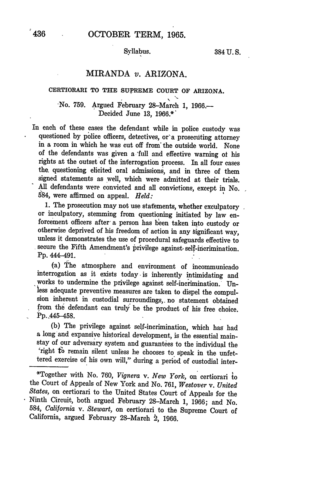

Optima Academy Online
An Education Experience Company
M/J CIVICS
Quarter / Module
Q2 · Module 4
Civil Liberties & Rights
Primary Source
Week 14 · Source 1
Author & Work
Miranda v. Arizona, 384 U.S. 436 (1966)
Pairs With
Lesson 14.1 · Critical Questions 14.1 (Canvas)
Primary Source 1
Miranda v. Arizona, 384 U.S. 436 (1966)
Read this, then complete Critical Questions 14.1 in Canvas.
📖 CONTEXT
Ernesto Miranda confessed during custodial police interrogation without ever being told he had a right to remain silent or a right to a lawyer. Chief Justice Warren's opinion for the Court set out the specific warnings police must give before any custodial interrogation begins. Read it alongside Lesson 14.1's explanation of exactly when this warning applies.

📜 THE TEXT
“The prosecution may not use statements, whether exculpatory or inculpatory, stemming from custodial interrogation of the defendant unless it demonstrates the use of procedural safeguards effective to secure the privilege against self-incrimination… he must be warned prior to any questioning that he has the right to remain silent, that anything he says can be used against him in a court of law, that he has the right to the presence of an attorney, and that if he cannot afford an attorney one will be appointed for him prior to any questioning if he so desires… The mere fact that he signed a statement which contained a typed-in clause stating that he had ‘full knowledge’ of his legal rights does not approach the knowing and intelligent waiver required to relinquish constitutional rights.”
(Opinion of the Court, Chief Justice Warren; condensed, public-domain text.)
💡 A NOTE ON THIS OPINION
Notice the phrase "prior to any questioning": the warnings this excerpt lists apply specifically to custodial interrogation, the situation Lesson 14.1 defines carefully. The passage also makes clear that a signed form claiming "full knowledge" of rights is not enough on its own; the Court requires proof of a "knowing and intelligent waiver," a real understanding of the rights being given up, not just a signature.
➡️ WHAT YOU'LL DO NEXT
1
Critical Questions 14.1 (Canvas)
Reread the excerpt above, including the note on custodial interrogation, before answering the two questions in Canvas.
Optima Academy Online · M/J CIVICS · Quarter 2 · Primary Source Page
Week 14 · Miranda v. Arizona, 384 U.S. 436 (1966)
© Optima Academy Online · An Education Experience Company